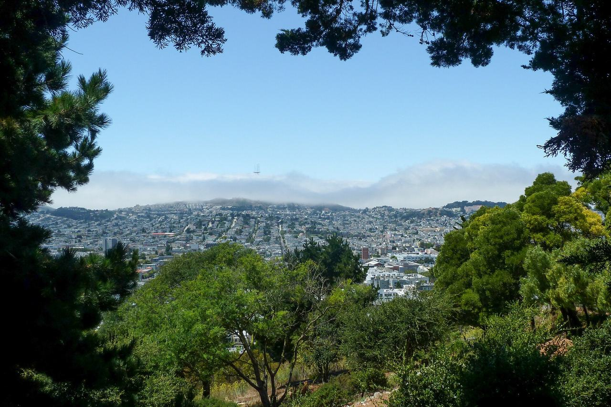

Noe Valley
The valley south of the ridge that divides it from Eureka Valley, on land José de Jesús Noé worked as part of the Rancho San Miguel before the Horner brothers bought and subdivided it. Coverage begins on 21st Street with a house named in Elaine Stiles's 2017 Eureka Valley context statement, just over the boundary of that study area, as an example of the Second Bay Tradition.

Map
Named buildings and landmarks
-
-

-
-

-
Streets documented so far
- 21st Street
1 building, built 1958. - 23rd Street
1 building, built 1910; 1 in the Diamond & Elizabeth Streets Historic District. - 24th Street
1 building, built 1900; 1 in the Diamond & Elizabeth Streets Historic District. - 25th Street
1 building, built 1900. - 26th Street
1 building, built 1958; 1 in the San Francisco 1952 Firehouse Bond Act Thematic District (Discontiguous). - 28th Street
2 buildings, built 1900–1910. - 29th Street
1 building, built 1916. - Alvarado Street
1 building, built 1900. - Amber Drive
3 buildings, built 1963; 3 in the Diamond Heights Historic District. - Cameo Way
1 building, built 1968; 1 in the Diamond Heights Historic District. - Castro Street
1 building, built 1973. - Cesar Chavez Street
1 building, built 1966. - Church Street
1 building, built 1914. - Clipper Street
3 buildings, built 1883–1916. - Clipper Terrace
1 building, built 1996. - Day Street
1 building, built 1938. - Diamond Street
2 buildings, built 1893–1900; 1 in the Diamond & Elizabeth Streets Historic District. - Douglass Street
1 building, built 1900. - Duncan Street
1 building, built 1908. - Hill Street
1 building, built 1965. - Hoffman Avenue
1 building. - Homestead Street
1 building, built 1909; 1 in the Diamond & Elizabeth Streets Historic District. - Noe Street
1 building, built 1900. - Sanchez Street
1 building, built 2001. - Turquoise Way
1 building, built 1962; 1 in the Diamond Heights Historic District. - Valley Street
1 building, built 1900. - Vicksburg Street
1 building, built 1900.
Parks and public spaces
- 29th & Diamond Open Space
Neighborhood park or playground, 40,511 sq ft. - Clipper Terrace Community Garden
Community garden, 20,473 sq ft. - Douglass Playground
Neighborhood park or playground, 7.9 acres. - Duncan & Castro Open Space
Neighborhood park or playground, 28,314 sq ft. - Noe Valley Courts
Neighborhood park or playground, 1.1 acres. - Portola Open Space
Neighborhood park or playground, 35,284 sq ft. - Upper Noe Rec Center
Neighborhood park or playground, 2.9 acres.
Historic districts here
Adjacent neighborhoods
The Castro is north over the ridge and the Mission north-east across Dolores Street. Bernal Heights lies east beyond San Jose Avenue and Glen Park south around the head of the valley.